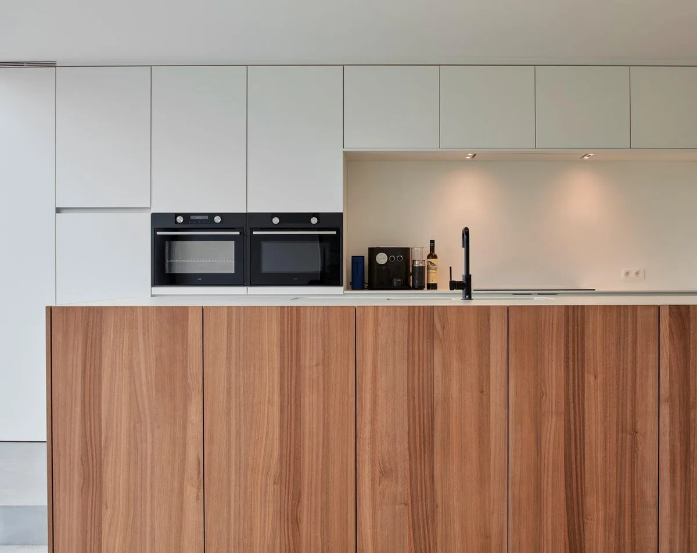
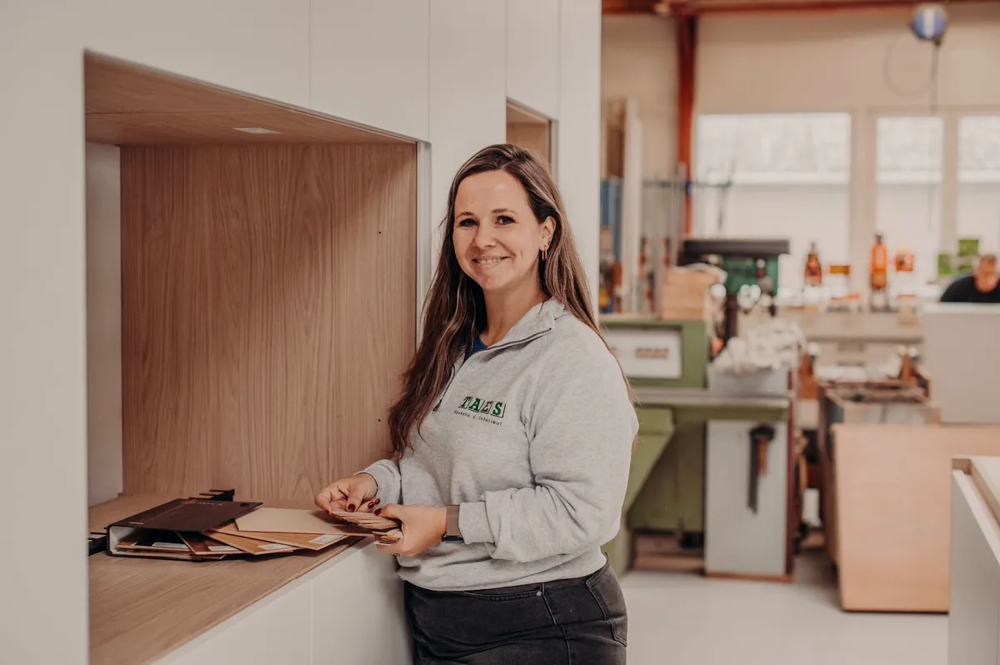
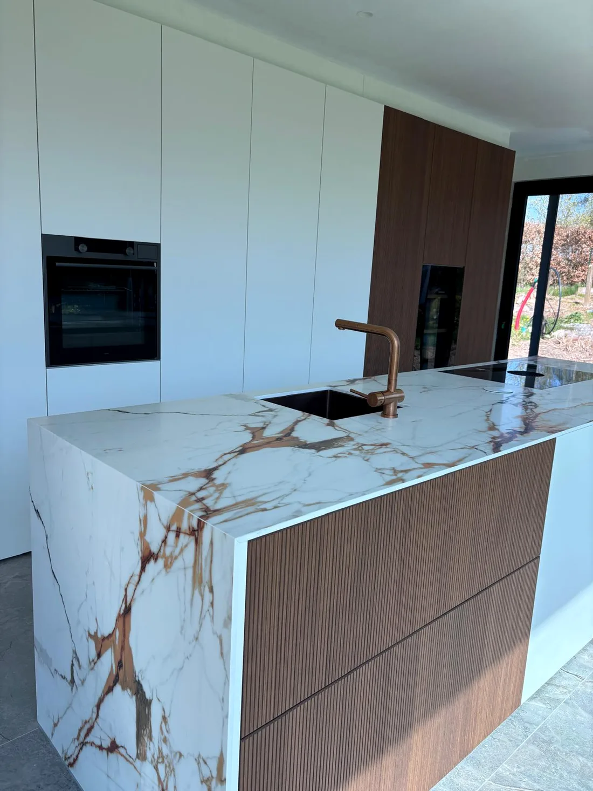
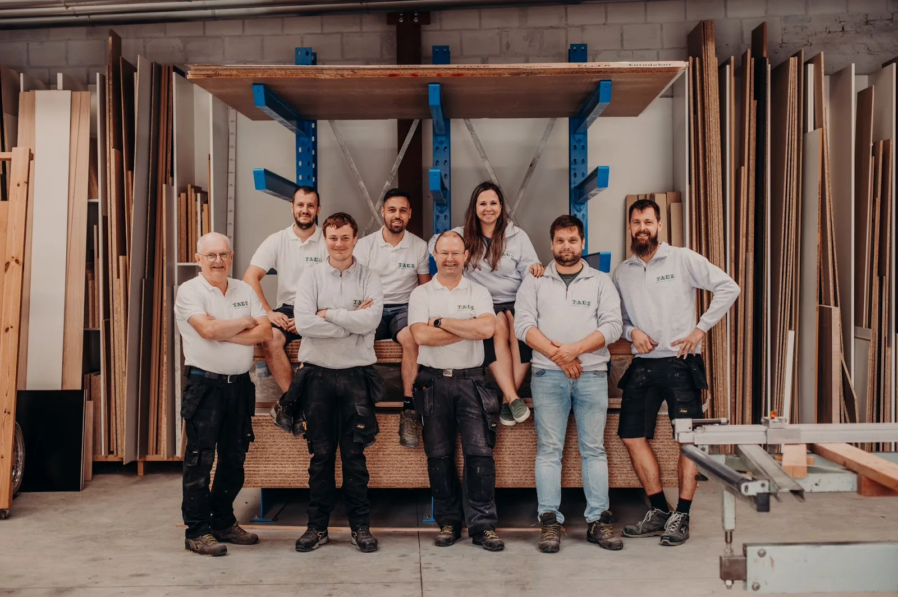
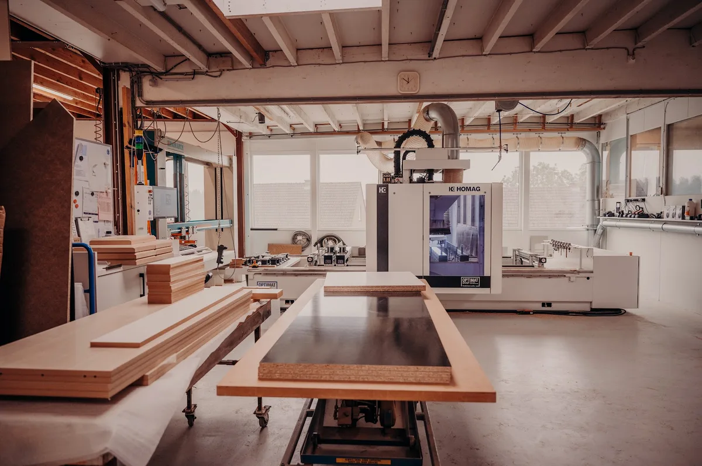
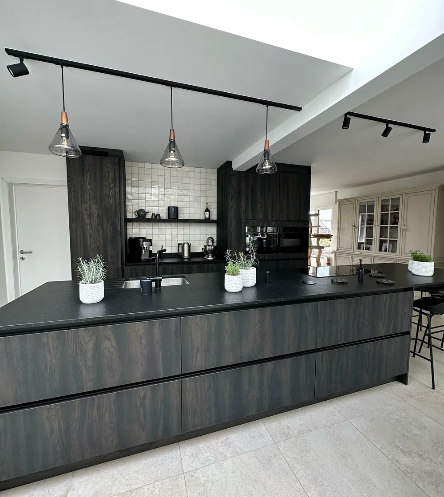
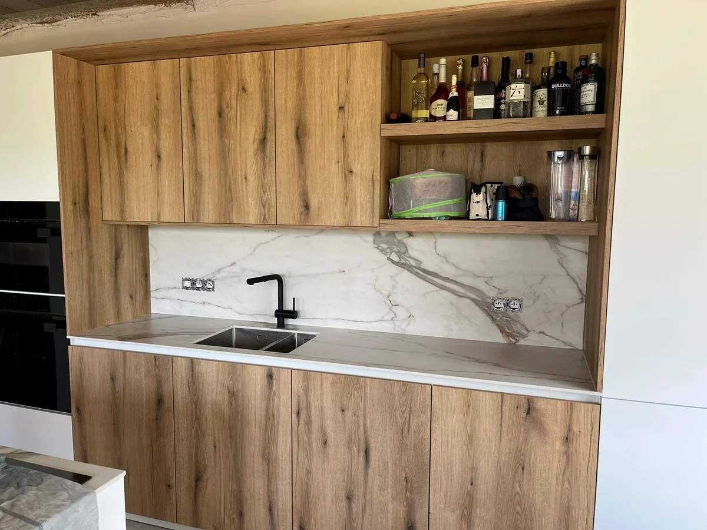
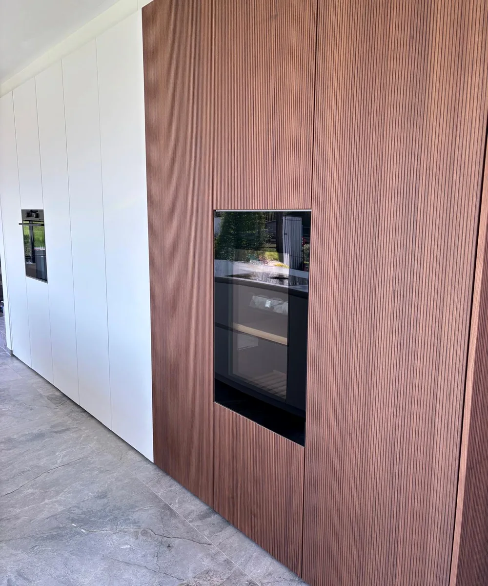
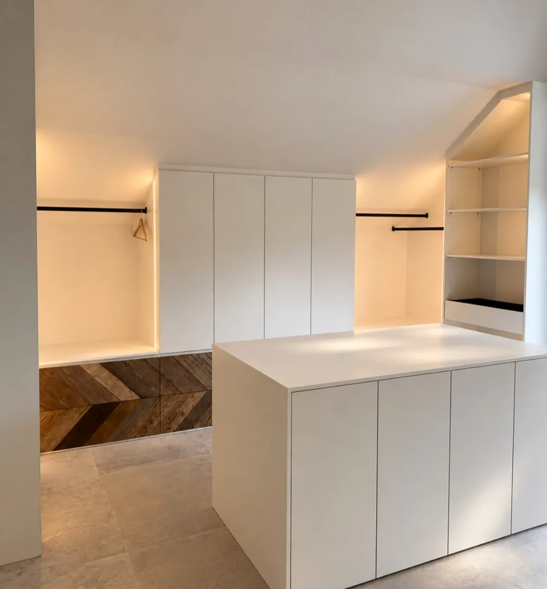

Keukens
Strak en greeploos, of landelijk met een kroonlijst. Toestellen van Miele, Bora, Novy, Atag of een Quooker bouwen we netjes mee in.
Bij Taes heb je van het eerste gesprek tot de laatste plint met dezelfde familie te maken. We tekenen je keuken of kast, maken hem zelf in ons atelier en onze eigen plaatsers zetten hem bij je thuis.


Kookeiland met een marmeren werkblad tot op de vloer
Vaak begint het met de keuken. Daarna volgen de dressing, de tv-wand of de badkamer, in hetzelfde hout en dezelfde lijn. Dat is het voordeel als je alles zelf maakt.

Strak en greeploos, of landelijk met een kroonlijst. Toestellen van Miele, Bora, Novy, Atag of een Quooker bouwen we netjes mee in.

Inbouwkasten, dressings, badkamermeubels en bureaus. Ook onder een schuin dak of in die ene lastige hoek.

Binnendeuren, trappen, wandmeubels en zelfs gyproc. Wat niet in een catalogus staat, maken we in het atelier.
Ook voor kleuradvies, interieuradvies, bergingen, de binnenafwerking van je ramen of de inrichting van je winkel kan je bij ons terecht.
Taes groeide uit de schrijnwerkerij van vader Herman. Vandaag staan zijn zonen Joris en Tim en schoondochter Saar aan het roer. Wie ons belt, krijgt dus iemand aan de lijn die je keuken kent.

Tekent je keuken of kast uit en helpt je kiezen in hout, kleur en afwerking.
Houdt de planning in het oog en is je aanspreekpunt tot alles staat.
Staat met Ronny, Wouter en Tiebe in het atelier, waar elk onderdeel op maat gemaakt wordt.
Vier vaste plaatsers van ons eigen team zetten alles bij je thuis, tot en met de plinten.


Een donkere keuken met zwarte railspots, een dressing onder een schuin dak, een eiland met latwerk. Alles op maat getekend en in ons atelier gemaakt.






Je hoeft niet zelf te zoeken naar een schrijnwerker, een plaatser en iemand die alles op elkaar afstemt. Dat doen wij.
Je vertelt wat je wil en hoe je in je keuken leeft. Een grondplan of een paar foto's van je ruimte helpen al veel. We pushen niets.
Saar werkt het ontwerp uit, met kleur- en interieuradvies als je dat wil. Is alles goed, dan maken Joris en de schrijnwerkers elk onderdeel in ons atelier.
Onze plaatsers zetten alles netjes bij je thuis. Loopt er onderweg iets anders dan gepland, dan zoeken we samen een oplossing.
"Zeer tevreden van onze keuken. Top werkmannen die een prachtige keuken hebben gezet! Duidelijke communicatie en mooi werk van A tot Z!"
"Top ervaring met het team van TAES. Komen afspraken na, goede opvolging en raadgevingen. De keuken werd deskundig geplaatst. Zeer netjes gewerkt, oog voor detail."
"Fijne keukenbouwer die goed luistert, niet pusht en kwaliteit levert. Wij zijn heel blij met onze nieuwe keuken!"
Stuur een mailtje of bel ons. Heb je al een grondplan of een paar foto's van je ruimte, stuur ze gerust mee. Dan spreken we af om alles samen te bekijken.
Ik maakte deze demo voor jullie om te tonen wat er kan. Na een kort gesprek maak ik er iets veel persoonlijkers van, helemaal naar jullie wens.
Vrijblijvend. Ik kom langs of we bellen.
Op maat, op jullie eigen domein.
Geen voorschot. Jullie betalen pas als alles klaar is.
Hosting, domeinnaam en kleine wijzigingen, zoals nieuwe openingsuren.
Omdat een voorbeeld meer zegt dan een mail. Zo zien jullie meteen wat er kan, en het kost jullie niets.
Nee. Het gesprek is vrijblijvend. Vinden jullie het niks, dan is het daarmee gedaan.
Na ons gesprek staat jullie site binnen 10 tot 14 dagen online.
Zeker. Jullie domeinnaam kan gewoon blijven, de nieuwe site komt in de plaats van de oude.
Nee, dat doe ik op basis van ons gesprek. Eigen foto's zijn mooi meegenomen, maar niet nodig om te starten.